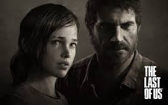
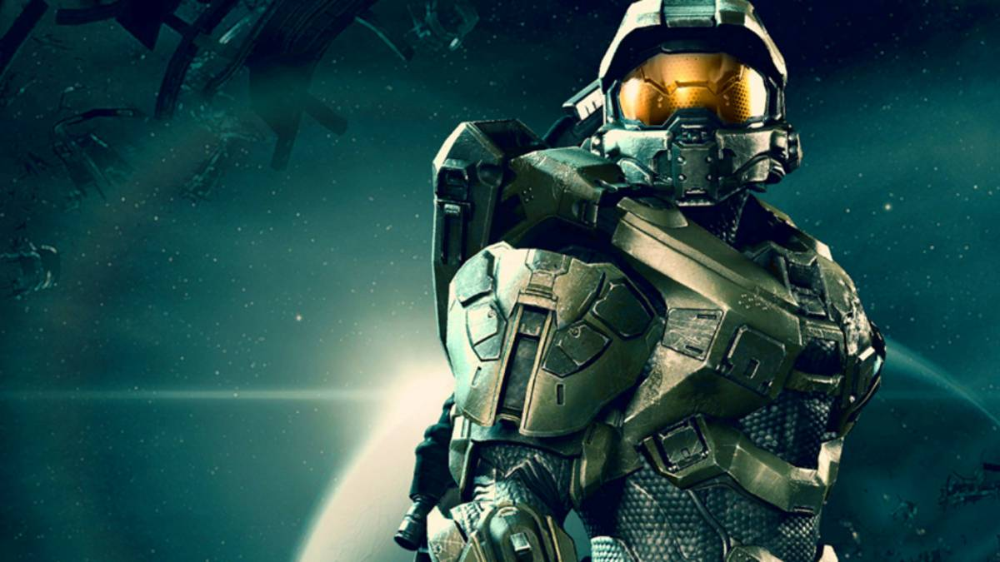

Last of Us (Remastered) (PS4)
Gaixotasun baten eraginez, ia munduan jende guztia zombieak bihurtu dira. Gure bi protagonistak, Joel eta Ellie, zombien kontra borrokatu behar dute, baina ere bai gobernuaren kontra, gauzak ongi egiten ari ez direlako. Joko hau tentsio asko eragiten dio jokalariari, eta bere pertsonaien harremanak oso ondo zaintzen ditu.
Halo 4 (Xbox One)
XXVI. mendean, bi arrazen guda baten ondorioz, gizakiak espaziora joan izan behar ziren. Protagonista gizaki bat da, soldadu bat, eta alienigenen kontra borrokatu behar du gizakien desagertzea eragozteko. Jokalari bateko joko bat da, eta bere istorioa bateraezina da.